DRL collision avoidance
Vision-based, goal-directed quadrotor navigation learned end-to-end with a from-scratch TD3 from stacked depth frames — the agent learns obstacle avoidance and goal seeking together, trained in Gazebo Classic on ROS 2 Humble with no external RL libraries.
Project goal
Fly a quadrotor to an arbitrary goal point in an unknown, cluttered indoor space using only a
forward-facing depth camera — no map, no planner, no privileged state. Formally this is
goal-conditioned continuous control under partial observability: a single
forward depth image is not a Markov state (it reveals nothing beside or behind the vehicle, and
nothing about the vehicle's own motion), the action is a continuous body-frame command
[vx, vy, vz, yaw-rate], and the one signal that matters — reaching the goal
— is far too sparse on its own to optimize a continuous-action policy.
The project builds the entire system from first principles: a TD3 actor–critic written directly in PyTorch (a discrete D3QN agent is included as an alternative), the Gazebo training environment, the reward and curriculum machinery, and a deterministic evaluation harness. Four practical difficulties shaped every design decision: partial observability, credit assignment (dense reward shaping without degenerate optima), curriculum feasibility (harder tasks the world can actually instantiate), and evaluation honesty.
From idea to simulation
The platform is defined as a URDF/xacro robot description adapted from the hector-quadrotor model: a 1.477 kg base link carrying the airframe's mass-property inertia tensor and mesh visual. One deliberate modeling choice: the collision geometry is reduced to a tiny sphere, because crash detection is done by a sensor-range threshold (0.15 m) rather than physics contacts — a larger collision body would be self-detected by the drone's own laser.
Sensors and actuation are declared in the same description as Gazebo plugins: a depth camera
streaming 128×160 metric depth at 30 Hz, a ray laser publishing /scan
at 10 Hz, and an IMU at 200 Hz. Actuation goes through the planar_move
plugin, which realizes vx, vy, yaw — and ignores vertical velocity, so
altitude is held by a kinematic set-point each step with gravity disabled for the airframe.
The pipeline also absorbed simulator reality: the GPU lidar returned only invalid ranges on
this stack and was replaced with a CPU ray sensor.
On the environment side, nine SDF training worlds span trivial open space to expert clutter — five hand-built (an L-shaped obstacle room, a maze, multi-room layouts) and four procedurally generated rooms that reuse the proven physics and marker scaffolding of the hand-built ones. Every world's SDF is parsed into an occupancy grid — composing model, link, and collision poses for box and cylinder geometry — which validates spawn points and goal placements before an episode ever runs. Because Gazebo Classic cannot hot-swap its world, multi-world training is orchestrated across runs: each world gets its own Gazebo session and the model checkpoint carries over.
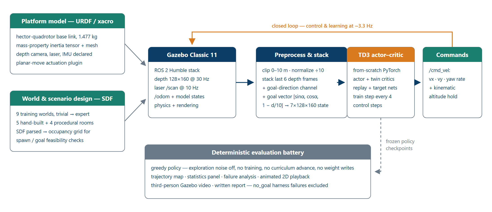
Implementation & architecture
The whole training loop lives in a single ROS 2 coordinator node: it subscribes to depth, laser, and odometry, builds the observation, queries the agent, publishes velocity commands, computes the shaped reward, stores the transition, and runs a gradient step every four control steps — a synchronous control–learn loop at roughly 3.3 Hz.
The observation is a 7-channel 128×160 tensor: six stacked depth frames (clipped to
0–10 m and normalized) to recover short-horizon dynamics, plus a goal-direction
image channel. The goal is encoded twice, deliberately: an explicit vector
[sinθ, cosθ, 1 − d/10] — the sine/cosine pair avoids the
discontinuity when the bearing wraps past ±180° — feeds the actor and critic
heads through a small MLP, while a Gaussian stripe painted into the seventh channel puts the
same information in the pixel frame, spatially aligned with the obstacles.
The learner is textbook TD3, implemented from scratch: a shared-architecture convolutional encoder (three conv layers plus a linear map to a 256-d feature), an actor that maps the concatenated 320-d feature through a 256-unit layer to four tanh-bounded actions, and twin critics — each with its own encoder and goal embedding to avoid representational interference. Learning uses clipped double-Q targets, target-policy smoothing, delayed actor updates (every second critic update), and slow Polyak-averaged target networks. The replay buffer holds 4×10⁴ transitions with uint8-quantized states (4× memory reduction) and per-state goal vectors; exploration noise anneals from 40% to 10% of each action's range, with the update counter persisted so a resumed run continues at the right noise level.
The reward philosophy is progress-dominated shaping: a potential-based progress term (24 reward per metre of approach) does almost all the work, alongside a small proximity bonus near the goal, an obstacle penalty that is exactly zero in open space, a +100 goal terminal and a collision penalty. A success-gated curriculum grows the goal distance whenever the recent success rate clears a threshold, a per-room feasibility probe caps that distance at what the world can actually place, and adaptive tiers keep early episodes short and early goal radii lenient while the replay buffer fills.
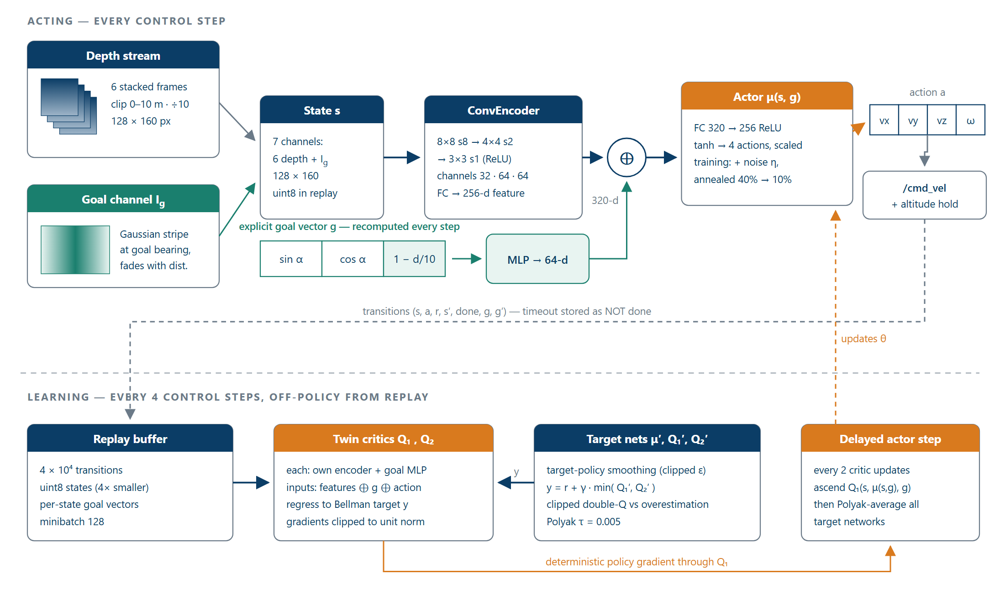
Second learner — recurrent, predictive PPO (extension — detour evaluation complete, dynamic-obstacle eval next)
The deployed controller above is the TD3 baseline, and it is deliberately memoryless:
it maps the current 7-channel state straight to an action. That is enough when the goal is
visible and the obstacles hold still, but it charges into large occluders it should detour
around — the goal briefly hides behind a box and a reactive policy cannot
remember its last-seen bearing — and it has no mechanism to integrate a moving
obstacle's motion over time. A separate diagnosis pinned the dynamic-distance ceiling
(~6.6–7.2 m with moving obstacles versus ~9.5 m static in the same world) on
partial-observability return variance colliding with an unnormalized value
function: the same observed state leads to a crash or not depending on the obstacle's
unobservable future motion, so returns are high-variance, the value loss spikes, and a
single over-large update craters the policy into a degenerate “ram a fixed
obstacle” collapse. The project therefore adds a second, on-policy learner
— ppo_rec, a recurrent, predictive PPO agent, again hand-written in PyTorch
with no RL libraries. It does not replace TD3; it is an additional agent that attacks memory
and value variance directly.
The network reuses the TD3 front end unchanged: the same convolutional encoder maps the 7-channel depth-plus-goal state to a 256-d feature, and the explicit goal vector passes through a small MLP (3 → 64 → 64) to 64-d. The concatenated 320-d feature is fed one control step at a time into a single-layer GRU (256-d hidden state) that is carried across the episode and reset at each boundary — the temporal memory the fixed frame stack alone cannot provide. From the GRU output three heads branch: a Gaussian actor (a linear mean plus a learnable, state-independent log-std, sampled during training and taken deterministically at evaluation, acting in a normalized action space affine-mapped to the physical bounds); a PopArt-normalized value head that keeps the value loss O(1) regardless of return scale — the single most targeted fix for the diagnosed collapse; and a training-only future-depth head that predicts the next three low-resolution (16×20) depth frames, forcing the recurrent state to encode how the scene will evolve rather than only where it is now. That auxiliary head is discarded at deployment, so prediction adds zero inference cost and no new hardware — the deployed path stays a single forward depth camera.
The learning loop is where the two agents diverge. Where TD3 samples an off-policy replay
buffer every few steps, ppo_rec fills a fixed-horizon on-policy
rollout with the current policy, computes per-episode, segment-aware
GAE (with the bootstrap chosen correctly per segment: zero at a true terminal, a critic
estimate at a horizon cut or a non-terminal timeout), runs several epochs of minibatch updates
over truncated-BPTT sequence chunks (24 steps, each unrolled from its stored
hidden state), and optimizes the PPO clipped surrogate
(ε = 0.2) together with the PopArt value loss, an entropy bonus, and the masked
future-depth loss — then discards the rollout. A KL early-stop guards the high-variance
regime: if the policy drifts past a target KL it freezes the actor while it keeps
fitting the value and auxiliary heads, because a starved critic re-creates the very collapse it
is meant to prevent. Since the recurrent agent subclasses the base PPO agent and reuses the TD3
state and goal construction verbatim, both learners see byte-identical observations and
plug into the same ROS 2 coordinator and Gazebo environment — switching is a single
agent_type:=ppo_rec flag, with the replay step swapped for a rollout and nothing
else touched. It trains on a dedicated, harder detour world
(gen_room_detour, 34×26 m, ~20 static occluders plus 8 moving
obstacles) under a decoupled distance–occlusion curriculum and a stronger −100
collision terminal.
![Architecture diagram of the recurrent predictive PPO second learner: the shared ConvEncoder and goal MLP feed a concatenated 320-d feature into a single-layer GRU whose hidden state is carried across the episode; three heads branch off — a Gaussian actor, a PopArt-normalized value head, and a training-only future-depth prediction head; below, the on-policy learning path shows the rollout, per-episode GAE, PopArt stats with truncated BPTT, and the clipped-surrogate update with a KL actor-freeze; a contrast ribbon lists how the data path differs from the deployed TD3 baseline](../assets/img/collision-ppo-architecture.png)
ppo_rec, laid out beside the TD3 anatomy above.
Top: the recurrent acting path — the shared depth+goal front end, a GRU carrying memory
across the episode, and the Gaussian actor / PopArt value / training-only future-depth heads.
Bottom: the on-policy learning path — a rollout (not a replay buffer), per-episode GAE,
PopArt normalization with truncated BPTT, and the clipped-surrogate update with a KL
actor-freeze. The ribbon contrasts the two data paths point-for-point; the inputs, encoder,
and environment interface are shared.Critical challenges
Injecting the goal into vision
Bare depth tells the policy where it can go, not where it should go, and a flat 3-vector goal encoding is not spatially aligned with the depth pixels — the network has to learn the correspondence between “goal 30° left” and image columns on its own. The fix was to paint the goal directly onto an image channel: a soft Gaussian stripe centred on the column that points at the goal, its brightness fading with distance. The very first convolution then sees the goal and the obstacles in the same spatial frame. This redundant dual encoding measurably sped up learning.
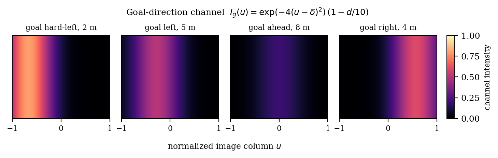
Reward local optima: safe circling and goal parking
Reward design was the single most consequential part of this work, and it failed twice in instructive ways. First, an early per-step survival bonus made harmless loitering worth about 85 discounted reward against roughly 50 for a risky goal approach — the critic correctly preferred circling near spawn forever. Second, a proximity bonus at 10× its final scale created a policy that flew to the goal and then hovered just outside the goal radius, harvesting proximity income indefinitely (timeouts are non-terminal, so the value bootstraps forever) rather than collecting the one-time +100. Both optima were removed structurally: survival income set to zero so open space pays nothing, the progress term made potential-based (which provably preserves the optimal policy) and dominant at 24 per metre, and the non-potential proximity bonus kept small enough that finishing strictly dominates any stalling behaviour.
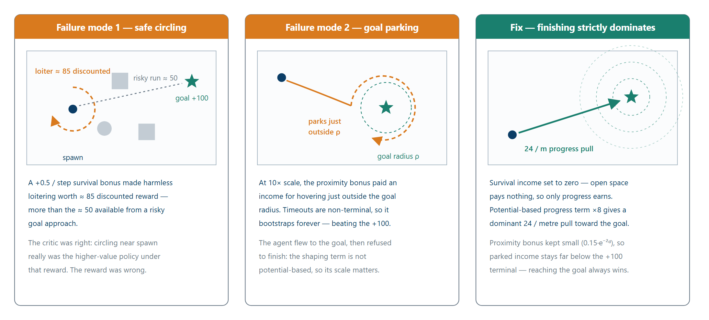
A curriculum that outran the room
The distance curriculum advances whenever the agent succeeds — but a cluttered room cannot place arbitrarily long, reachable, clear goals. Pushed past that point, the goal sampler simply failed: at a 12 m target roughly 40% of episodes had no goal at all, and the drone flew with a null target. Two mechanisms fixed it: a per-room feasibility probe run at environment load, which caps the curriculum at the largest distance whose goal yield clears a threshold (12 → 11 m in the hardest room), and a relaxed-band fallback sampler that retries progressively shorter distance bands instead of giving up. Degenerate no-goal episodes were eliminated.
The 30-point measurement artifact
A naive success counter reported 50% on an early evaluation. Inspection showed that 8 of 20 episodes were the no-goal harness failures above, silently counted as policy collisions. Separating harness failures from policy failures recovered the true rate of about 80% — a 30-point swing from a measurement artifact, not a better policy. The evaluation protocol now runs the deterministic policy with no exploration noise, no training, no curriculum advance, and no weight writes, labels goal-generation failures explicitly, and excludes them from the success rate.
Simulator constraints as design forces
Several load-bearing design choices are downstream of simulator quirks. The laser self-detects
the drone's own body at close range, so two different distances are used: the raw minimum for
collision detection and a filtered minimum for reward shaping. The planar_move
plugin ignores vertical velocity, so altitude is a kinematic hold rather than a learned
degree of freedom. Timeouts are stored as non-terminal with zero reward — the
agent cannot observe the step counter, so a time-triggered penalty would be non-Markov label
noise. And because Gazebo Classic cannot swap worlds inside a run, the nine-world curriculum
runs as an orchestrated sequence of separate Gazebo sessions with the model resumed between
them.
What a reactive policy still cannot do
The remaining failures are structural, not tuning. A feed-forward policy with a forward depth cone cannot remember what it has passed, so it flies near-straight and clips mid-room obstacles rather than planning a detour around a large occluder — and it has no mechanism at all for moving obstacles. A related diagnostic: the deterministic policy is not systematically better than the noisy behaviour policy on every run, meaning the controller still relies partly on action jitter for incidental clearance in tight gaps. This is being addressed now with a from-scratch recurrent, predictive PPO extension: a GRU memory carried across the episode, a training-only auxiliary head that predicts the next three low-resolution depth frames, PopArt value normalization for the high-variance returns that moving obstacles induce, detour-specific reward terms (a clearance-gated heading reward, a time-to-collision penalty, and a progress gate that stops paying for charging at occluders), and a decoupled distance–occlusion curriculum on a dedicated 34×26 m world with 20 large occluders and 8 moving obstacles. Its deterministic evaluation on the static detour world is now complete and reported below; the moving-obstacle case the same architecture targets remains open.
Results & analysis
gen_room_mixed (20×16 m, 16 obstacles), exploration noise off — green sphere is the goal, red boxes and grey pillars are obstacles.The clip above is the deployed greedy policy — no exploration noise — recorded directly from the Gazebo viewer in the hardest static world. What to watch for: the drone turns onto a goal-directed heading almost immediately and holds a committed, near-straight line, threading between the boxes and pillars rather than wandering or hesitating.
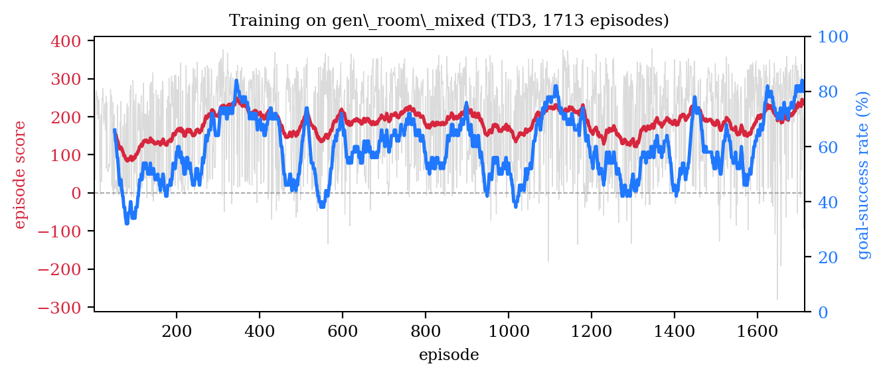
gen_room_mixed: episode score (smoothed over the raw trace) and rolling goal-success rate across 1713 episodes.The learning curves need reading with the curriculum in mind. The mean episode score climbs and then stabilizes, but the rolling success rate oscillates between roughly 40% and 85% — and that oscillation is the curriculum working, not instability. Every time the success rate clears the advancement gate, the goal distance increases and success temporarily drops: the agent is continually re-challenged at its competence frontier, so a flat high success rate would actually indicate a stalled curriculum. The final 50-episode success rate settles at 80%.
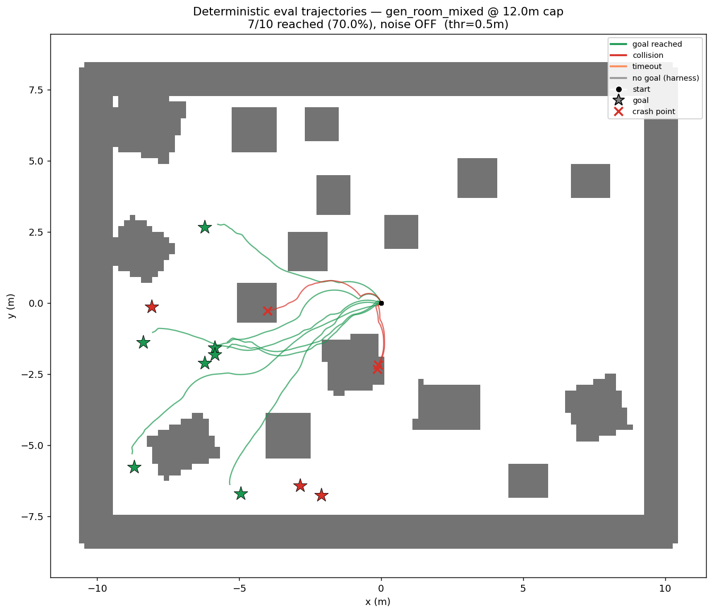
The trajectory map is the most informative single figure. Successful runs (green) travel almost straight from spawn to their goal stars — the measured path efficiency is 1.05× the straight-line distance, within 5% of optimal. The failures (red) are not scattered randomly: they cluster where a path cuts a corner past a mid-room obstacle, and they happen early and fast — failed episodes average 46 steps against 100 for successes. That asymmetry is the signature of a policy that commits to a route and occasionally clips an obstacle, rather than one that stalls: the timeout rate across the evaluation is exactly zero.
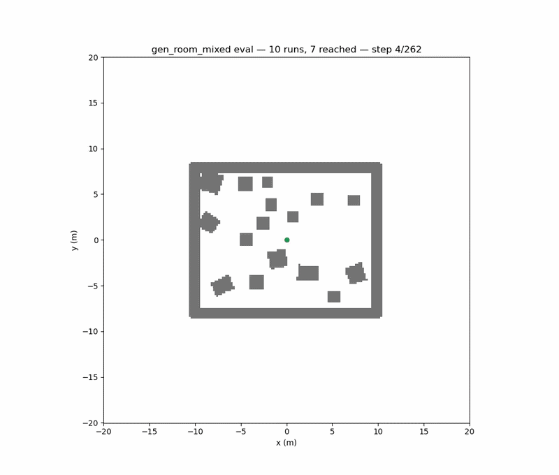
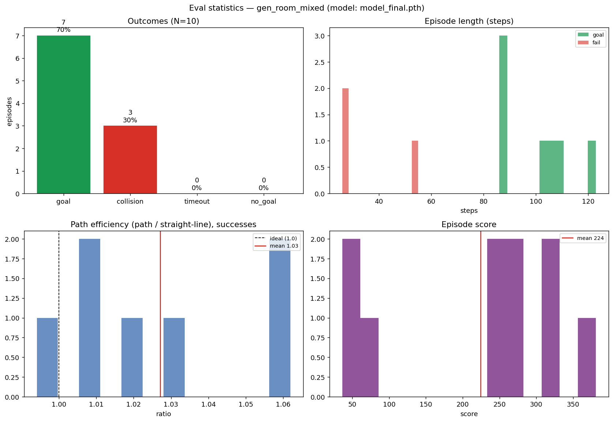
The statistics panel above comes from the recorded 10-episode run: 7 of 10 goals reached, every failure a collision, no timeouts, and zero goal-generation failures. The step-count histogram splits into short failed runs and longer completed ones; the path-efficiency distribution sits tightly above 1.0; and the score distribution separates cleanly between goal episodes and collision episodes. The headline 20-episode deterministic evaluation at the 11 m feasibility cap lands at 16 of 20 — 80% — with the same zero-timeout signature. Goal-generation failures are detected and excluded throughout, so these numbers measure the policy, not the harness.
What remains weak is equally visible in these figures: the 20% collision tail is concentrated at mid-room occluders the reactive policy will not route around, and the policy's residual dependence on action jitter near tight gaps means the deterministic controller is not yet strictly better than its own behaviour policy. Those two gaps — detours and moving obstacles — are exactly what the recurrent extension targets, and the detour half of that is now evaluated below.
Second learner — deterministic detour evaluation
The recurrent extension now has its first deterministic evaluation, run through the same
harness-aware protocol that made the TD3 numbers trustworthy: ppo_rec's best
checkpoint, exploration noise off and training off, on the dedicated gen_room_detour
world it was built for — a cluttered room whose goals genuinely cannot be reached in a
straight line. The clip below is that greedy policy, recorded directly from the Gazebo viewer.
ppo_rec evaluation in gen_room_detour — the drone flying the detour course, curving around the blue box occluders and orange pillars to reach the green goal, exploration noise off.Across 15 deterministic episodes the recurrent policy reaches the goal in 12 of 15 — 80.0%. The most important detail is how it fails: all three failures are collisions, not timeouts (0 timeouts, 0 no-goal). The policy never stalls or circles — it commits to a trajectory and, when it fails, drives into an obstacle. That is the same decisive-but-occasionally-wrong signature as the TD3 baseline, now carried onto a much harder task.
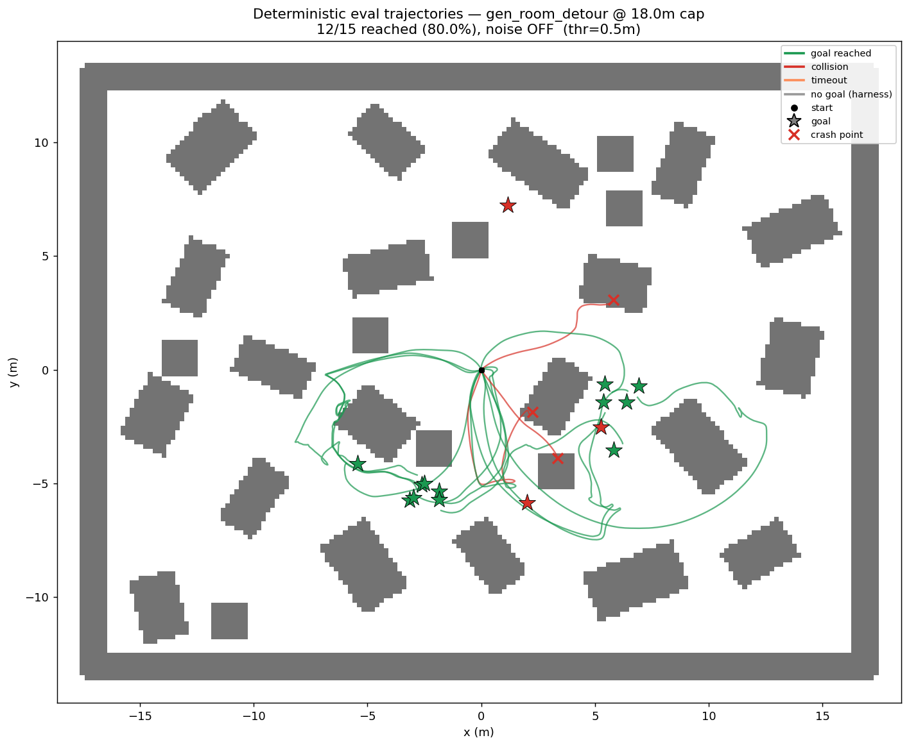
ppo_rec detour run drawn over the real occupancy grid — green reaches the goal, red is a collision with the crash point marked, stars are goals. The green paths visibly curve around the occluders instead of cutting straight through them.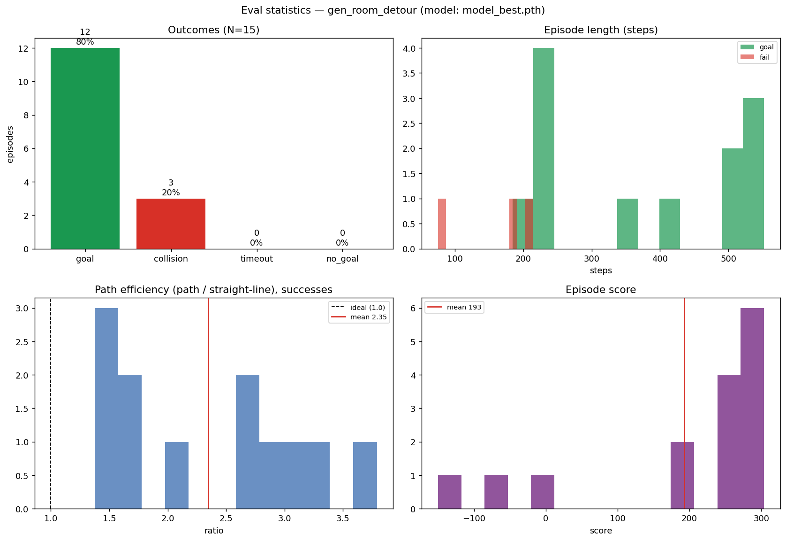
ppo_rec detour evaluation.The figures make the detour behaviour concrete. Path efficiency — path length over straight-line distance — averages 2.35× on the successful runs (1.0 would be a straight shot), so these are genuine curving detours, not near-straight lines that happen to miss the obstacles. Successful episodes also run about twice as long as failed ones (mean 374 steps versus 158; medians 382 versus 184): the failures die early, while a completed detour is a longer, committed route around the clutter. Episode score separates cleanly — a mean of 193 (median 259), with the collision episodes falling well below — and even the failed runs get close, coming within a mean of 3.9 m (median 3.1 m) of the goal before they crash.
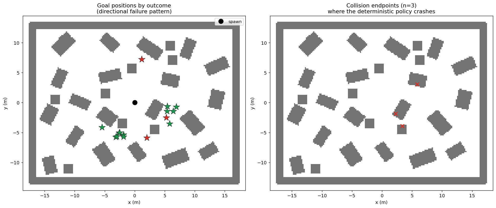
The remaining three collisions are where the work now is: they cluster among the mid-room occluders on one side of the course, where a committed curving route still clips a box. One honest caveat on the headline number: 80% is the deterministic evaluation of the best checkpoint — the stochastic success rate during training was lower (around 40%, with more collisions), so the deployed greedy policy is meaningfully sharper than the noisy behaviour policy that produced it.
A word on comparing the two learners: TD3's 80% and ppo_rec's 80% are not
directly comparable — they are measured on different worlds. The TD3
figure is on the non-detour gen_room_mixed course; the ppo_rec figure
is on the harder gen_room_detour world it was purpose-built for, where straight-line
policies cannot succeed at all. Both are deterministic, harness-aware numbers from the same
evaluation protocol, and both are reported as such — neither is a claim that one learner
beats the other. What the detour result does establish is that the
memory-and-value-normalization extension can fly true detours — on static
obstacles. The moving-obstacle case the architecture also targets is not yet evaluated and
remains future work.
Future work
- Evaluate the second learner on moving obstacles — the deterministic
detour evaluation on static occluders is done (80% above); the moving-obstacle case
the recurrent architecture (
ppo_rec, described above) was built for still needs the same harness-aware evaluation battery. - Close the collision-mode failure gap — the three detour failures are all collisions clustered at mid-room occluders, so drive that 20% collision tail down rather than trading it for timeouts or stalling.
- Run the ablation ladder — isolate each contribution
(
ppo→ + PopArt → + GRU → + future-depth aux) to show which pieces actually buy the detour capability. - Widen the observation — fold the existing laser ring into the policy input to cover the lateral and rearward blind zones implicated in the residual strafing collisions.
- Sim-to-real depth — replace simulator depth with monocular metric depth (a Depth-Anything-V2 node already exists in the stack) and train against the noise-augmented camera stream with domain randomization before any hardware trial.
- Learn altitude — retire the kinematic altitude hold and give the policy genuine vertical control.
- Decouple learning from control — move gradient updates off the synchronous loop to lift the ~3.3 Hz control rate.